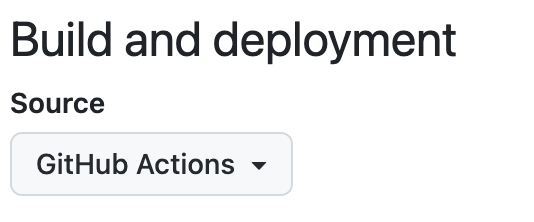

講義資料用のテンプレートです. テンプレートの大元はjust-the-docsです. マークダウンで資料を記述できます. また数式はmathjaxで書けます.
全体の大まかな流れ
マークダウンで書かれたページのファイルをローカルの環境でjekyllと呼ばれるソフトでコンパイルのような作業(htmlファイルやcssなどの生成)を行った後にリポジトリのmainブランチにプッシュするとGithub Actionを経由して更新が反映されるようになっています. 具体的には, Settings/PagesのBuild and deploymentの欄をGithub Actionsにした後にプッシュすれば良いです.

ローカルでページプレビューするにはjekyllを使ってページビルドする必要があり, そのためにはrubyの環境構築が必要になります. そのための手順は以下に記しておきます (macを想定).
ローカルの環境設定方法
手元で動かすのに必要なもの
- Ruby
- rbenvでRubyのバージョン管理をするのが楽 (Pythonでいうところのpyenvみたいなもの).
- rbenvは, homebrewであれば
brew install rbenvでインストールできます. - rbenvを使ってRubyのバージョンを新しくしたい場合と手順を以下に記します.
rbenv install -lでインストールできるバージョンの一覧を取得してrbenv install バージョン番号でインストールしてrbenv global バージョン番号でインストールしたバージョンをデフォルトに設定- ~/.bash_profileに
eval "$(rbenv init -)"を追記し, ターミナルでsource ~/.bash_profileを実行. ruby -vでRubyがちゃんと指定したバージョンになっているかを確認
- RubyGems
- bundle を
gem install bundlerでインストール - bundleのバージョンは
gem install bundlerでアップグレードできます.
- bundle を
Jekyllをインストールし, ターミナルでフォルダに移動し
bundle install
bundle exec jekyll serve --livereload
これによって, http://127.0.0.1:4000/ をブラウザで開くと書いたものをプレビューすることができます. ファイルを編集し保存するとブラウザ上の表示も自動的に更新されるはずです (自動更新をオフにしたい場合はオプション --livereload を消してください).
PCにあれこれインストールしたくない場合はdockerコンテナを使う方法もあります (dockerはインストールする必要あり).
マークダウンファイルの場所
- この文章は/index.mdに記述されており, トップページはこれを編集してください.
- 講義資料は基本的に /doc/ に記述していきます. /doc/にフォルダを作成し, 各回ごとに整理することもできます.
- 例えば /doc/第1回/講義1.md という構成になります. また, /doc/第1回/にindex.mdというファイルを作成しておくことによって, 各回ごとのトップページを作成することができます.
- サイトの様々な設定は/_config.ymlを編集してください. 例えば以下の要素を変更できます.
- ページタイトル
- 右上の「製作者: 清水 伸高」
- 最下部の「Copyright © 2024 Nobutaka Shimizu. This site is powered by Github Pages.」
- baseurlの内容はリポジトリ名, urlの内容はhttps://GitHubのアカウント名.github.io にしないとGitHub Pagesに公開できません.
baseurl: "/lecture_template" # /リポジトリ名 url: "https://nobutakashimizu.github.io" # https://アカウント名.github.io
数式の記述
例えば
グラフ$G=(V,E)$を考える.
というインラインに数式を含む文は
グラフ$G=(V,E)$を考える.
のように表示されます. 複数行にまたがる式変形などは
$$
\begin{align*}
a &= b \\
&= c
\end{align*}
$$
と書けば
\[\begin{align*} a &= b \\ &= c \end{align*}\]と表示されます (念の為, 最初と最後の$$の前後には一行空けておくと良いです.)
定理環境
定義などを述べるためのコールアウトは以下のように記述できます.
このボックスには定義を記します. 以下のように, 数式ボックスを内部に含めることができます:
\[\begin{align*} A_{u,v} = \begin{cases} 1 & \text{if $\{u,v\} \in E$}, \\ 0 & \text{otherwise}. \end{cases} \end{align*}\]
また, 以下のようにタイトルを自由に付与することができます.
定義 (タイトル)
定義の例.
他にも命題,補題,定理,系のボックスが使えます.
このボックスには命題を記します.
証明
このように, 折りたためる証明も書けます. 内部でもインライン(例えば$a=b$)や独立した数式ブロックが書けます. $$ \begin{align*} a &= b \\ &= c. \end{align*} $$ しかし, なぜかマークダウンはかけません. この中で強調表示したい場合は, 苦肉の策ですが, htmlタグを使って装飾しましょう. $\square$このボックスには定理(特に重要度の高い命題)を記します.
このボックスには命題や定理を示すために必要な補助的な主張を記します
このボックスには定理や命題などから直ちに成り立つ結果を記します.
このボックスには強調したい注釈が入ります.
新たなコールアウトの定義方法
他のボックス(例えば観察,未解決問題用のコールアウトなど)を自身で追加したいときは以下の二つのファイルを適切に編集してください.
- /_config.yml (コールアウトの宣言)
- /just-the-docs/_sass/support/_variables.scss (背景や文字の色の定義)
注意事項
- 手元の実行環境に依存しますが, 少なくとも私の環境では講義資料を格納するフォルダ名に全角文字を使うとlivereload機能にエラーが生じてしまいましたので, 念の為フォルダ明は半角にした方が良いと思います (ファイル名は全角でも大丈夫だった)
- 画像を挿入する際, jekyllの「コンパイル」作業によって画像ファイル自体が別の場所に移動するため相対パスで指定すると良いです. ただし, 本来よりも一つ上のパスを指定する必要があり, 少し直感に反するので注意してください (第1回の例参照).
- 数式の記述において, 記法の競合を避けるためLaTeXとは少し異なる記法をする可能性があります.
- 例えば中括弧$\{\}$は
\{ \}ではなく\\{ \\}とする必要があります. - また, 絶対値の記号$\lvert \rvert$では
||ではなく\lvert \rvertを使わなければ正しくレンダリングされない可能性があります.
- 例えば中括弧$\{\}$は